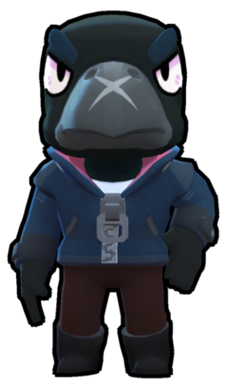

Ворон – легендарный боец, которого можно выбить из любого ящика. У него средний радиус атаки, но у него очень мало здоровья, ему отплачивает хорошая скорость перезарядки и способность не давать восстановление здоровья противнику.
